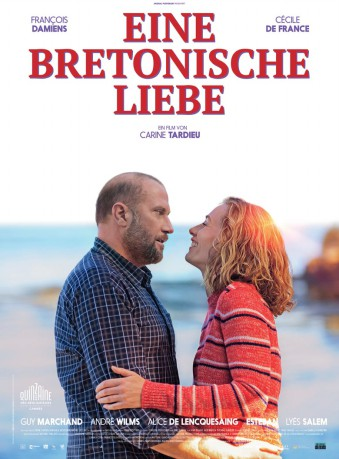

#9249 Eine Bretonische Liebe
 
 IMDB-Wertung: 6.7 / 10
IMDB-Wertung: 6.7 / 10  Metascore: 0
Metascore: 0 
Erwan (François Damiens) ist 45 Jahre alt, verwitwet und arbeitet als Mitglied eines Minenräumkommandos. Er hat also gute Nerven – die mächtig beansprucht werden: Denn seine Tochter Juliette (Alice de Lencquesaing) ist schwanger und weigert sich, den Vater preiszugeben. Was Erwans eigenen Papa angeht, so erfährt der Sohn eines Tages zufällig, dass der Mann, den er immer für seinen Vater gehalten hat, das im biologischen Sinne gar nicht ist – was ihn schwer aus der Fassung bringt. Obwohl er immer noch an seinem Adoptivvater Bastien (Guy Marchand) hängt, beschließt er, sich auf die Suche nach seinem Erzeuger zu machen und stößt dabei auf Joseph (André Wilms), der sich als ein liebenswerter Mann von etwa 70 Jahren entpuppt, zu dem Erwan schnell ein gutes Verhältnis aufbaut. Doch zugleich lernt er auch Anna (Cécile De France) kennen, in die er sich verliebt, bevor er feststellt, dass diese Liebe nicht sein darf…
Jahr: 2017
Dauer: 100 Minuten
FSK: 6
Land: Frankreich Studio: Arsenal FilmverleihTonspuren: DTS - ,
Untertitel: Deutsch,
Auflösung: 1080p (1920x1040) Größe: 7485 MB
Genre: Drama, Komödie
Regisseur: Carine Tardieu
Drehbuch: Baya Kasmi
Soundtrack: Eric Slabiak
Darsteller:
 François Damiens als Erwan Gourmelon
François Damiens als Erwan Gourmelon Cécile de France als Le docteur Anna Levkine
Cécile de France als Le docteur Anna Levkine- Guy Marchand als Bastien Gourmelon
 André Wilms als Joseph Levkine
André Wilms als Joseph Levkine- Lyès Salem als Madjid
- Aylin Mikaelian als (uncredited)
 Alice de Lencquesaing als Juliette Gourmelon
Alice de Lencquesaing als Juliette Gourmelon- Estéban als Didier
- Sam Karmann als Le docteur Rio - le généticien
- Brigitte Roüan als Cécile - la détective
- Julie Debazac als La directrice d'exploitation
- Loïc Baylacq als Le chef de chantier
- Nadège Beausson-Diagne als La mère de la fillette
- Heiko Dethier als Le technicien démineur
- Hervé Pierre als L'administrateur des affaires maritimes
- Emmanuelle Michelet als La vendeuse de crêpes
- Alban Aumard als Le serveur du restaurant
- Anna Gaylor als La patiente d'Anna
- Soumaye Bocoum als La stagiaire de Juliette
- Guillaume Clémencin als Le docteur Legrand
- Perrette Souplex als La réceptionniste de l'hôtel
 John Sehil als Visiteur de l'Hôpital Robert Ballanger, à Sevran (uncredited)
John Sehil als Visiteur de l'Hôpital Robert Ballanger, à Sevran (uncredited)
Datei: X:\2017(A-F)\Bretonische Liebe, Eine (2017, FSK6, 1920x1040).mkv seit 20.07.2018
Festplatte: HD 2017(A-Z)-2018(A-F)
 Es gibt insgesamt 152 Filme in der Gruppe '2017(A-F)'
Es gibt insgesamt 152 Filme in der Gruppe '2017(A-F)'